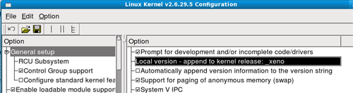
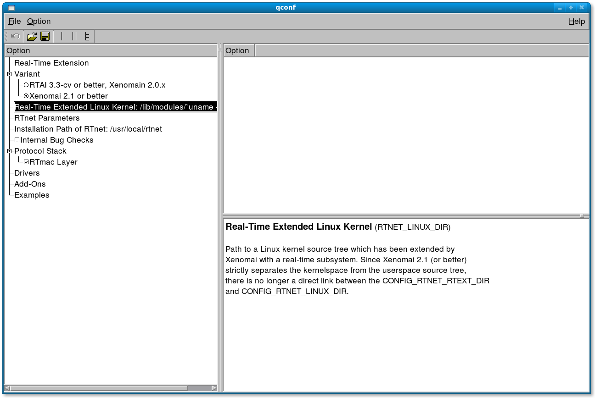

- Xenomai - Linux kerneli gerçek zamanlý sistem yamasý
- RTNET - Gerçek zamanlý að haberleþme paketi
- FLTK2 - Arayüz tasarým kütüphanesi
- OpenVRML - Vrml ayrýþtýrma kütüphanesi
Xenomai kurulumu için Linux Kernel, adeos ve Xenomai yamalarýna ihtiyaç vardýr. Xenomai yamasý kernel kaynak dosyalarý ile birleþtirilip kernel yeniden derlenmelidir.
Linux Kernel www.kernel.org, Xenomai www.xenomai.org, adeos home.gna.org/adeos sitelerinden indirilebilir. Bu anlatým da 2.6.29.5 kernel ve bu kernele uyumlu adeos yamasý, 2.4.8 stable Xenomai yamasý kullanýldý.
Ýndirilen sýkýþtýrýlmýþ haldeki Linux Kernel ve Xenomai dosyalarý /usr/src klasörü içine çýkartýlýr. Bu iþlemler için gerekli komutlar aþaðýdaki gibidir.
$ sudo tar –xf <Xenomai File Path>
$ sudo tar –xf <Linux Kernel File Path>
Dosyalar çýkartýldýktan sonra hem kurulum hemde versiyon geçiþlerinin kolaylýðý için kaynak dosyalarýnýn olduðu klasorlere kýsayollar tanýmlanýr.
$ sudo ln -s <Xenomai Folder> xenomai
Xenomai paketi Linux Kernel'e yama yapýlýr.
$ sudo ./prepare-kernel.sh
Linux tree: /usr/src/linux
Target architecture : x86_64
Adeos patch: <Adeos File Path>
Yama iþlemi yapýldýktan sonra kernel ayarlarý yapýlýp dermeleme iþlemine baþlanýr. Kernel ayarlarýný yapmak için göresel arayüzü olan QtConfig kullanýlýr. Bilgisayarýnýzda Qt yok ise hata meydana gelir, Add/Remove Software Development files for the Qt 3 GUI toolkit paketini yükleyiniz.
$ sudo make xconfig
Açýlan linux kernel konfigürasyon penceresinde General Setup -> Local version - append to kernel release kýsmýna çift týklanýr ve altta açýlan kýsma _xeno yazýlýr, enter tuþuna basýlýr. Bu sayede yeni kurulan linux kernelinin uzantýsýnýn son eki _xeno olacaktýr.

Linux kernel konfigürasyon penceresinde Real-time sub-system -> Timing baþlýðý altýndaki Enable periodic timing seçeneði iþaretlenir. Daha sonra Real-time sub-system -> Interfaces baþlýðý altýndaki Native API ve POSIX API altýndaki seçeneklerin hepsini iþaretlenir.
Konfigürasyon dosyasý ayarlandýktan sonra sýrasý ile aþaðýdaki komutlar yazýlarak kernel derlenir ve sisteme yeni kernel kurulur.
$ sudo make modules_install
$ sudo make install
Kernel kurulumu bittikten sonra Xenomai sisteme kurulur.
$ sudo ./configure
$ sudo make
$ sudo make install
Bilgisayar yeniden baþlatýldýðýnda gnub ekranýnda _xeno uzantýsý olan Linux Kernel'i seçilir. Xenomai yamasýnýn doðruluðunu test etmek için latency örneðini çalýþtýrýlýr.
$ sudo ./latency
RTNET kurulumu için, RTNET kaynak koduna ihtiyaçtýr vardýr. ( www.rtnet.org sitesinden indirilebilir) RTNET kurulumu, kurulumun parametrelerin seçilmesi, derleme ve dosyalarýn sisteme kopyalanmasýndan oluþur.
Ýlk iþlem, RTNET kaynak dosyalarýný derlemeye hazýr hale getirmektir. Daha sonra make config iþlemi ile kurulum parametreleri belirlencektir.
RTNET sistemi inceler ve kendini yapýlandýrýr. Aþaðýdaki komutlardan sonra RTNET Konfigurasyon penceresi açýlýr.
$ cd <RTNET Folder>
$ ./configure
$ make xconfig

Açýlan konfigürasyon penceresinde Variant sekmesinde "Xenomai 2.1 or better" iþaretlenir, Real-Time Extended Linux Kernel kýsmýna "/usr/src/linux", Installation Path of RTnetkýsmýna "usr/local/rtnet" yazýlýr.
Bu deðerler girildikten sonra, kullanýlan ethernet kartýna uygun sürücülerin aktif olmasý için Drivers sekmesi altýnda gerekli sürücüler seçilmedir. Seçim yapýldýktan sonra konfigürasyon penceresi kayýt edilir ve kapatýlýr.
Konfigürasyon dosyasý ayarlandýktan sonra aþaðýdaki komutlar ile RTNET derlenir. Kurulum iþlemine ek olarak bir header dosyasý, RTNET kurulum klasörüne kopyalanmalýdýr. Bu iþlem aþaðýda anlatýlmýþtýr.
$ make
$ sudo make install
$ sudo cp ./stack/include/rtnet_config.h /usr/local/rtnet/include
Bu iþlemler tamamlandýðýnda RTNET kurulumu tamamlanmýþ olur.
Bu iki paketin Zenom ile kullanýlmasý için kurulumunda herhangi bir özelleþtirme yapmak gerekmemektedir. Paketlerin kendi kurulum rutinleri ile kurulum yapabilirsiniz.
Gerekli paketler kurulduktan sonra Zenom kurulumu baþlamaya hazýrdýr. Zenom kurulumu, sistemin incelenmesi, derleme ve dosyalarýn kopyalanmasýndan oluþur.
Zenom Kurulum Komutlarý
$ cd <Zenom File Path>
$ ./configure
$ make
$ sudo make install
Bu iþlemler yapýldýktan sonra, Zenom "usr/local/zenom" klasorune kurulmuþ ve kullanýma hazýr hale gelmiþtir.